click to zoom
With these mockups, I'm trying to give a global overview of what the devtools could look like.
I introduce a "Developer Toolbar". This toolbar would be optional. All the tools should be reachable
from the Web Developer menu.
I tried to make the UI flexible enough to give enough freedom to the user (Customizable toolbar, foldable
panels, unpinable doorhangers, ...).
I am also trying to give the user a way to keep the tools non-intrusives (foldable inspector), and then
let him focus on the web page itself.
I'm trying to keep the interface simple The toolbar, by default, comes with 2 or 3 buttons.
Also, the toolbar includes an entry point for all the tools. I think it's important to do not "lost" the
user with 'tools in the main menu but not in the dev toolbar'.
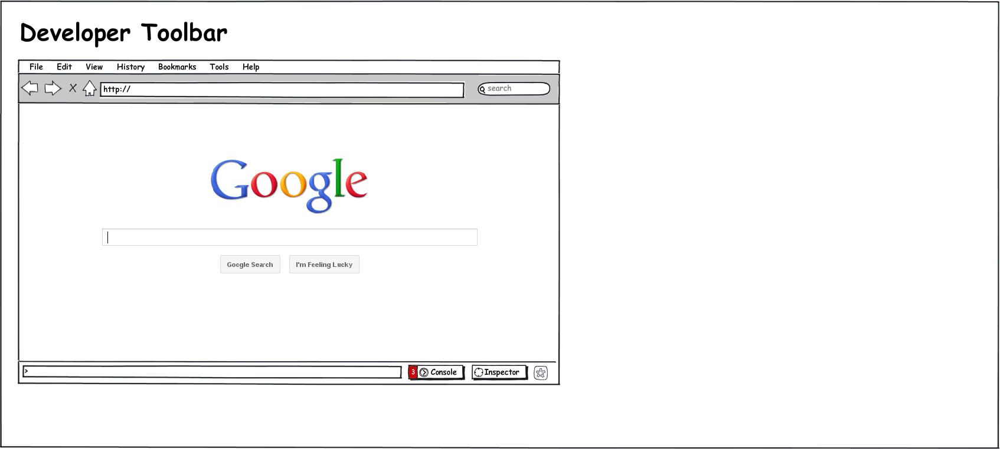
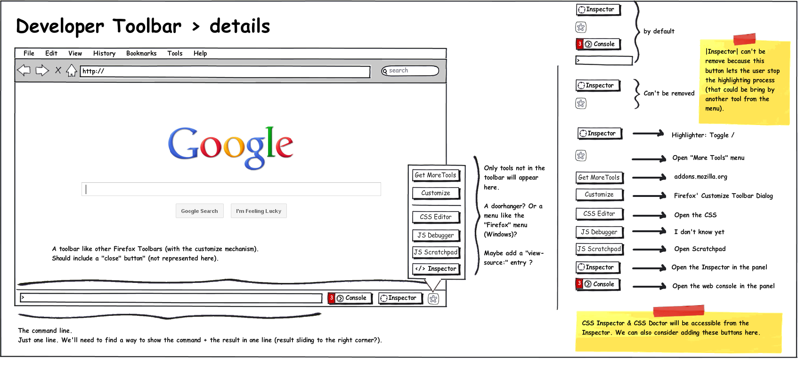
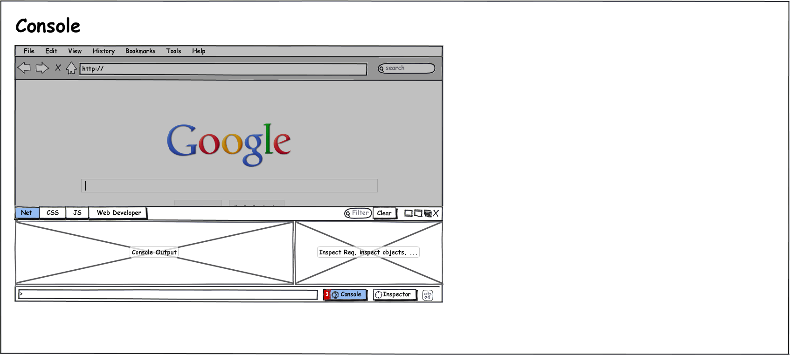
 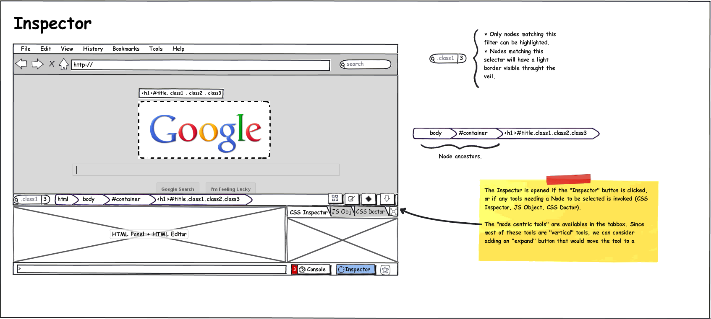
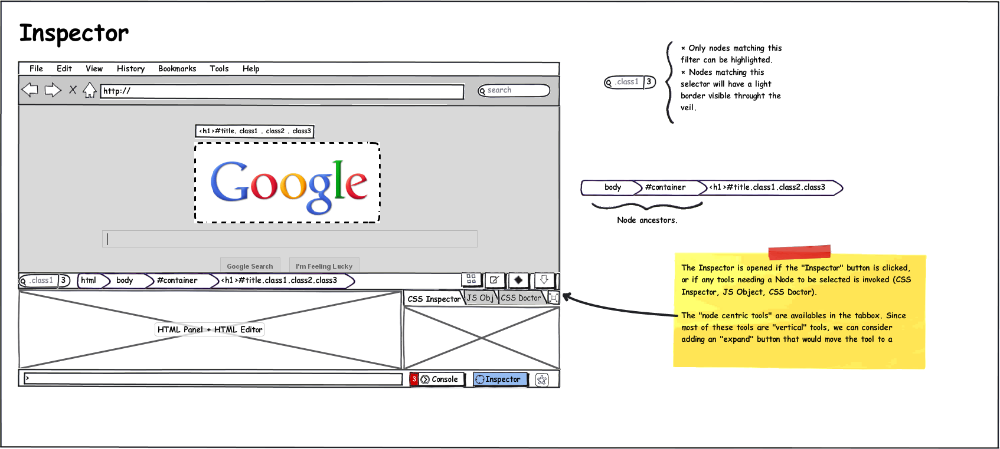
 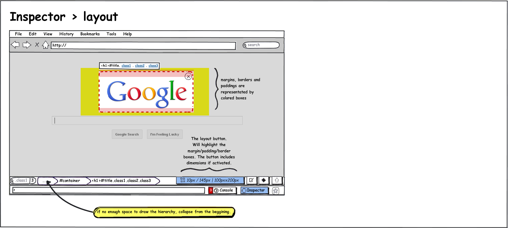
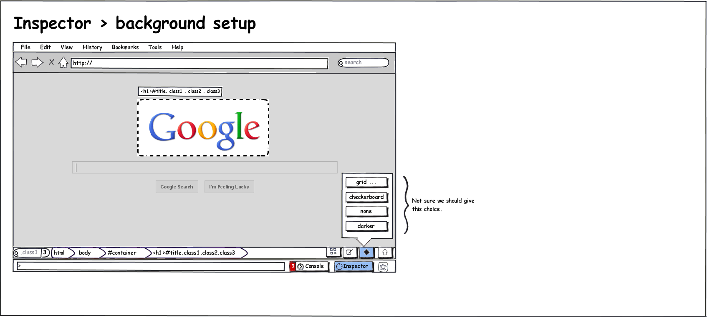
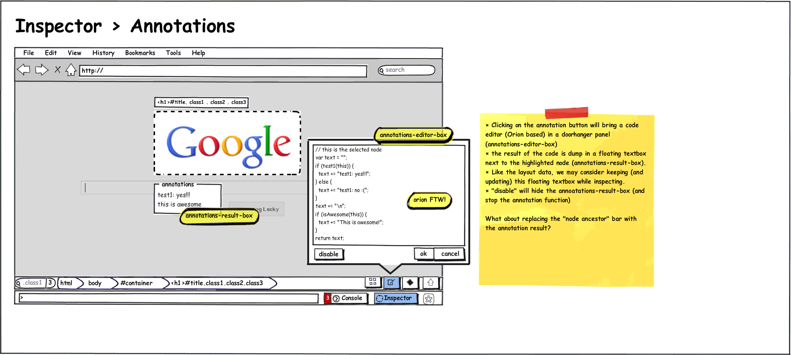
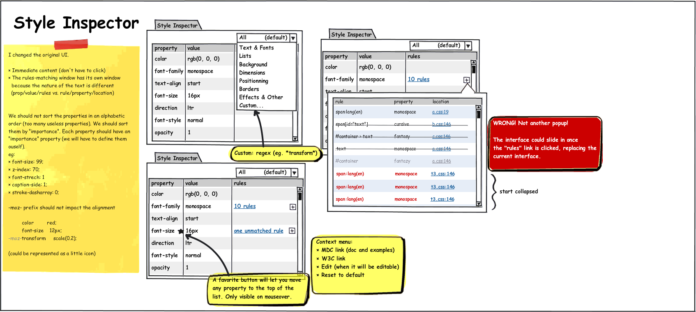
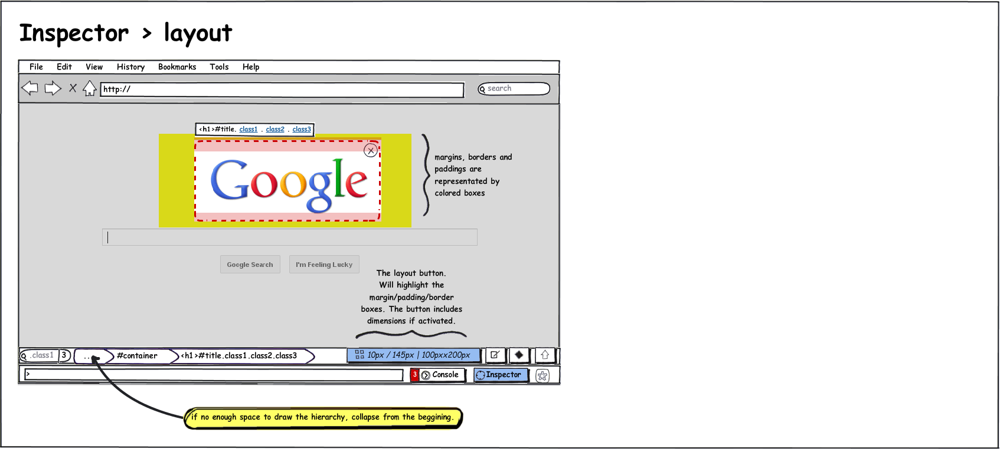
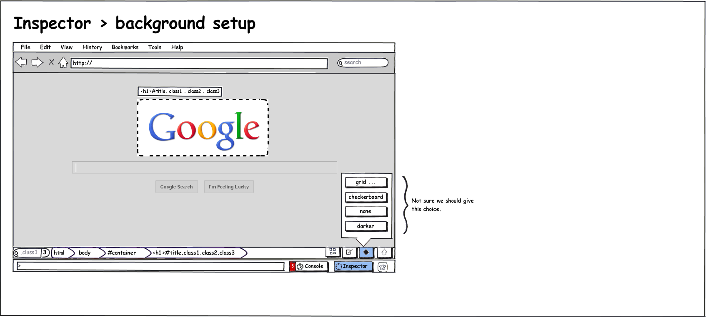
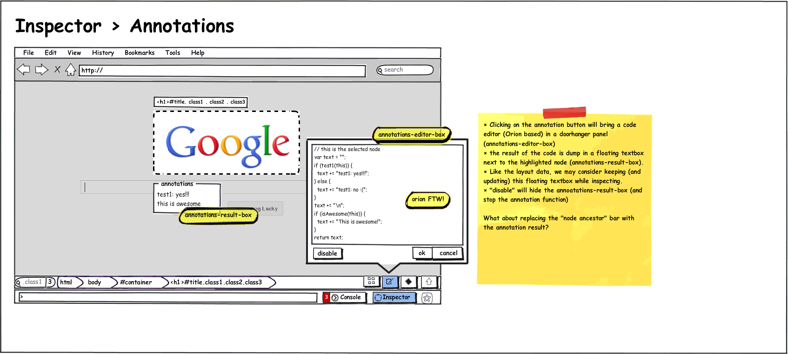
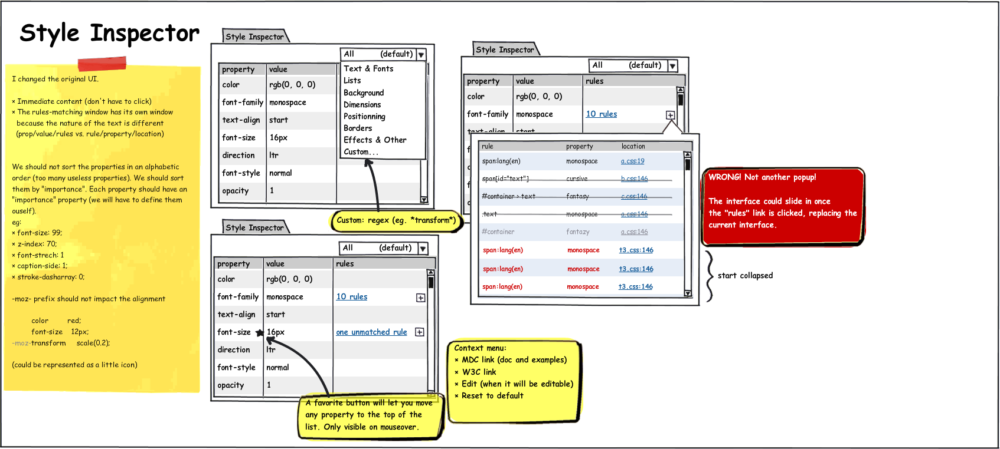